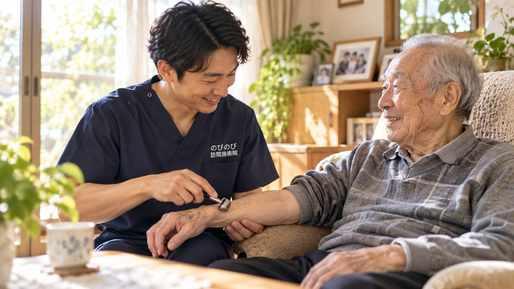

朝晩は冷え込むのに、日中はまだ暑い。この時季になると、肩がこる、腰が重い、なんとなくだるい。そんな訴えが増えます。ここでは、秋の寒暖差でなぜ不調が重なるのか、どこから受診が必要なのか、訪問鍼灸マッサージに何ができて何ができないのかを、順にご説明します。
まず大事なところから。朝晩の冷え込みと日中の暖かさの差で、肩こりや腰の痛み、だるさが強まります。医師が慢性的な痛みなどで治療の必要を認めれば、国家資格をもつ施術者がご自宅にうかがい、医療保険（鍼灸で算定）で受けられます。自己負担は1割の方で1回およそ395円、2割の方で約790円が目安です。
秋に不調が重なるのはなぜ？
秋は、日中はまだ汗ばむほどでも、朝晩はぐっと冷え込む。そんな一日の寒暖差が大きくなる季節です。おまけに、夏のあいだ暑さと冷房で消耗した体が、急に涼しくなった気候に追いつけず、だるさや食欲の落ち、なんとなくの不調として表に出やすくなります。
高齢の方は、体温を一定に保つ力が少しずつ弱まっていることが多く、気温の上がり下がりに体が振り回されがちです。ですから寒暖差の大きい秋は、痛みやこわばり、疲れやすさをとりわけ感じやすい時季といえます。
寒暖差はなぜ肩こりや冷えにつながる？
気温が大きく変わるたびに、体は体温を保とうとして自律神経をせわしなく働かせます。この上げ下げが続くと調節に体が疲れ、自律神経のバランスがゆらぎやすくなります。
自律神経は、血のめぐりや眠り、痛みの感じ方にも関わっています。そのゆらぎが、手足の冷え、肩こりや腰痛の悪化、寝つきの悪さ、日中のだるさといった形で顔を出します。秋の不調が「あちこちに散らばって出る」のは、こうした背景があります。
急な体調の崩れは、まず医療機関へ
秋の不調に見えても、見逃せない変化が隠れていることがあります。急にろれつが回らなくなった、片側の手足に力が入らない、これまでにない強い頭痛や胸の痛みがある、息苦しさが続く、意識がはっきりしない。こうしたときは、いつもと違うサインです。迷わずかかりつけ医や救急にご相談ください。
高い熱が続く、急に体調が大きく崩れたといったときも、まず受診が先です。訪問鍼灸マッサージが受け持てるのは、慢性的な痛みやこわばりです。急な変化のときは医療を優先し、落ち着いてからあらためてご相談いただくと安心です。
秋の訪問で、まず確かめること
涼しくなってからお宅へうかがうと、まずどこが冷えているか、どの筋肉がこわばっているか、夏の疲れが尾を引いていないか、眠りや食欲はどうかを、ていねいにたどっていきます。寒暖差で調子が日ごとに変わりやすい時季なので、その日の体の様子に合わせて進めます。
朝晩の冷えでこわばりが強く出る方もいれば、日中の疲れが夕方にどっと出る方もいます。その方の生活のリズムと体の傾向をうかがいながら、無理のない加減でほぐしていきます。
鍼やお灸で、冷えとこわばりをゆるめる
鍼やお灸には、こわばった筋肉をゆるめ、血のめぐりを促して、冷えや痛み、だるさを和らげるはたらきが期待できます。朝晩の冷えが気になる季節は、お灸でじんわり温めるケアを心地よく感じる方が多いものです。
鍼灸を軸に、体をやさしくさする手技や、動かしにくくなった関節を無理のない程度に動かす運動も、その日の体調に合わせて組み合わせます。これらについて別途の料金はいただきません。効き方には個人差がありますので、いちばん楽になれる方法をその方と探していきます。
気温を気にせず、家で受けられる
気温差の大きい日に治療院へ出かけるのは、それだけで体にこたえます。朝の冷え込み、着るものの調整、行き帰りの疲れ。こうした負担がまるごとなくなるのが、家に来てもらう施術のありがたいところです。
ご自宅なら、いつもの落ち着いた場所で、外の気温を気にせず受けられます。体調がゆらぎやすい季節の変わり目こそ、玄関の先まで来てもらえる安心は大きいものです。
背中と肩甲骨まわりが、秋のこわばりの出どころになりやすい
背中や肩甲骨のまわりは、呼吸のたびに動いている場所です。寒暖差で体が縮こまると、このあたりの筋肉が硬くなり、呼吸が浅くなったり、横になったときに寝返りがしにくくなったりします。朝起きたときに背中が張っている、深く息を吸うと突っぱる、という訴えが増えるのもこの時季です。
施術では、背中から肩甲骨のまわり、首の付け根にかけてを、痛みの出ない範囲でゆるめていきます。胸まわりが広がって呼吸がしやすくなると、寝つきや寝返りの楽さにつながることがあります。ただし眠りそのものを治療するものではなく、感じ方には個人差があります。
秋に、家でどう気をつける？
施術の効きを支えるうえで、暮らしのなかの工夫も助けになります。朝晩の冷え込みに備えて羽織るものを一枚そばに置いておく、首・手首・足首を冷やさない、温かい飲み物で内側から温める。こうしたことがこわばりの予防につながります。
また、痛くない範囲で体をこまめに動かすこと、食事をしっかりとって夏の疲れを取りもどすことも、体調を立て直すうえで役に立ちます。できることからひとつずつ、無理のない範囲で取り入れてみてください。
東洋医学でみる季節の変わり目のケア
東洋医学では、季節の変わり目は体のバランスがゆらぎやすく、夏の疲れを残したまま秋を迎えると、だるさや冷え、痛みが出やすいと考えます。秋のケアでは、体を温めながらめぐりを整え、疲れをためこまないことをねらいます。
その方の体質とその日の状態を見ながら、ツボの選び方や刺激の強さを調整していきます。季節の移り変わりに合わせたケアを続けることで、これから来る冬に向けて体調を整えていくことを目標にしています。
涼しくなって動かない体を、動く体に保つ
涼しくなると過ごしやすい反面、体を動かす機会がへってしまう方もよくいらっしゃいます。ですが動かない時間が長引くと筋力が落ち、冬になってから動きにくさが一気に強まってしまうことがあります。
施術のなかで、痛くない範囲で体を動かす時間も取りながら、ご家庭で続けやすい簡単な動きをお伝えしています。秋のうちに体を動かす習慣を保っておくことが、冬を元気に過ごす下地になります。冷えそのものが気になる方は、高齢者の手足の冷えを芯から温める在宅ケアもあわせてご覧ください。
見守るご家族の負担も、そっと軽くなる
季節の変わり目は、ご家族が体調に気を配る場面も増えます。送り迎えや付き添い、日々の体調の見守りは、思いのほか負担がかかるものです。施術者が定期的にうかがうことで、その手間が少し軽くなります。
国家資格を持つ施術者の目が定期的に入ることで、ご本人の体調の小さな変化に気づきやすくなり、気になることをその場で相談できる相手がいる安心にもつながります。
よくある質問
秋の寒暖差の時季だけ受けることもできますか？
体調がゆらぎやすい季節に合わせてご相談いただけます。ただし健康保険を使う場合は、医師が慢性的な痛みなどで治療の必要を認めていることが条件になりますので、まずはお気軽にお声がけください。同意書のやりとりは当院が段取りします。
どのあたりまで来てもらえますか？
北摂6市（豊中・吹田・茨木・箕面・摂津・池田）と、阪神間の尼崎・伊丹、大阪市の淀川区・東淀川区・都島区・北区・旭区の、あわせて13地域にうかがっています。この範囲なら交通費のご負担なくご自宅へ伺います。
費用の目安を教えてください。
医療保険を使うと、1回の施術は総額3,950円で、自己負担は1割の方で約395円、2割の方で約790円です。介護保険の支給限度額とは別枠のため、ほかの在宅サービスと併用しても枠を圧迫しません。週2回のペースなら、ひと月の自己負担はおよそ3,160円ほど（1割の方）になります。月ごとに、内容がわかる明細をお渡しします。
要介護認定を受けていなくても利用できますか？
はい。訪問鍼灸マッサージは医療保険（療養費）のしくみで受けるもので、介護保険の認定とは別の制度です。認定がなくても、医師の同意があり、ご自身で通院するのがむずかしい状態であれば対象になります。
お灸は熱くありませんか？
心地よいと感じる程度の温かさになるよう調整します。台座のついたお灸を使い、熱さの感じ方をそのつど確認しながら進めますので、「少し熱い」と思われたらすぐにお伝えください。感覚が鈍くなっている部位には、より慎重に加減します。
夏の疲れでだるいだけなのですが、相談してもよいですか？
だるさの背景に慢性的な痛みやこわばりがある場合は、ご相談いただけます。ただし健康保険の対象になるかどうかは医師の判断が土台です。また、だるさが強い、体重が減ってきた、熱が続くといったときは、まずかかりつけの先生に診ていただいてください。